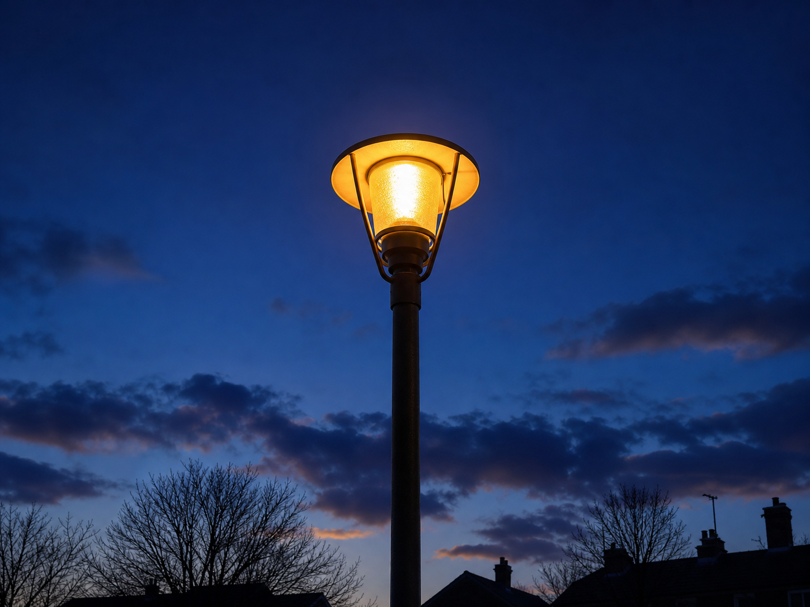
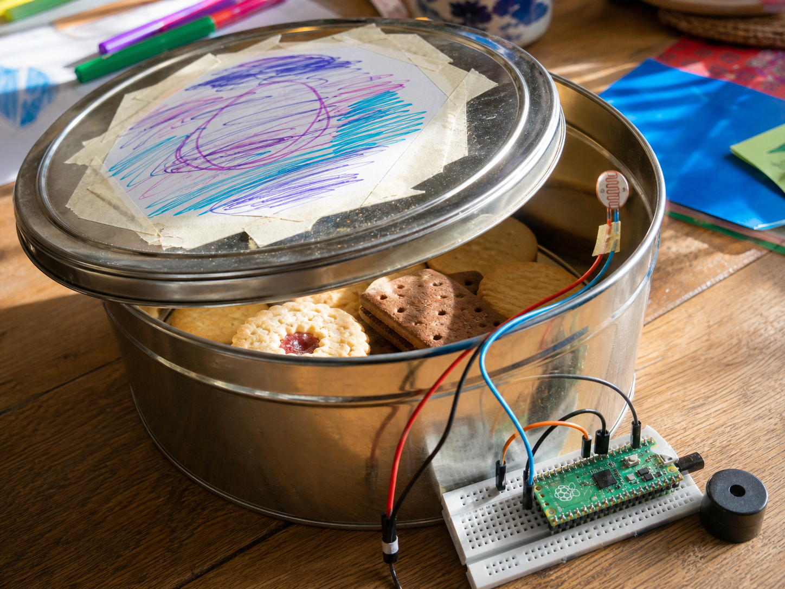

Street light
DetectHow dark it is
DecideDarker than dusk
DoSwitch the lamp on
An LDR is a sensor that measures how bright or dark it is.
LDR stands for light-dependent resistor. Light shining on it lets electricity through more easily, so your code can tell light from dark.
Your projects can use it to react when a lamp comes on, when night falls, or when a shadow passes over.


from gpiozero import LightSensor
ldr = LightSensor(18)
light = ldr.valuefrom picozero import AnalogInputDevice
ldr = AnalogInputDevice(26)
light = ldr.valuelight runs from 0 in the dark to 1 in bright light. A Pi also gives you ldr.light_detected and ldr.when_light; a Pico gives you ldr.voltage.